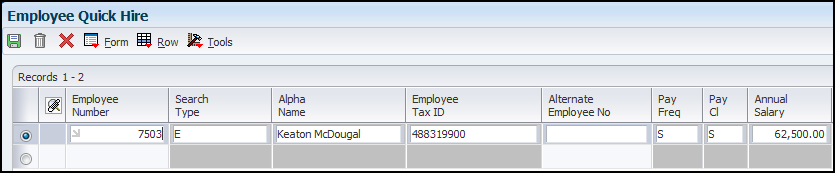

This document explains the use of the Quick Hire application (P060016Q) to add multiple employees, applicants, new hires and rehires.
Scope
This document is intended for EnterpriseOne users who are setting up the Human Resources and Payroll modules for use by their organization.
Details
Overview of Employee Quick Hire
You can use Employee Quick Hire (P060116Q) to add multiple employee records when you hire groups of individuals that have common job information. Using Employee Quick Hire reduces typing errors and data entry time. You can define the common job information as default information that the system supplies for each employee record that you add. You must also set the processing options to define certain default information and processes related to Employee Quick Hire.
Employee Quick Hire offers a robust capability to track various types of user-defined information. Thirty category code fields are available for tracking address book codes that can be assigned to addresses in the JD Edwards EnterpriseOne Address Book system. Twenty category codes are available for tracking JD Edwards EnterpriseOne Payroll system information. Ten category codes are available that can be used to specify employee eligibility for participation in various user-defined plans or activities.
Understanding New Employee Information Tasks
When you hire a new employee into an organization, you need to perform many tasks to prepare for the new employee and to ensure that any preliminary employment activities are completed. These tasks might vary depending on the employee's location and job duties. For example, an administrative assistant might need to have a telephone, computer, network sign-on, ID badge, parking sticker, and building key to start working. A hospital nurse might need to have an ID badge, parking sticker, and locker assignment, and to have completed a blood test and attended safety orientation prior to starting work. Most new employee setup tasks require management approval, and these approvals might have been accomplished by routing a paper approval form. The new hire employee setup program automates and streamlines the initiation of these tasks by sending E-mail messages through workflow to the individuals responsible for completing these tasks.
When you add employee records using Employee Quick Hire (P060116Q), you can set an Employee Quick Hire processing option to specify whether the new employee information updates the Employee Master Information (F060116), Address Book Master (F0101), Requisition Activity (F08105), and Applicant Master (F08401) tables as you complete the process. Or you can set the processing option to store the new employee information in the Unedited Quick Hire Transaction File table (F060116Z). Storing the information in this table allows you to review and revise the information before running the Process Pending Employees report (R060116P) to update the other tables. Please note that if you are allowing Address Book Numbers to generate, the address book number will not generate until you run the R060116P Process Pending Employees.
If the Employee Quick Hire processing option is set to update the F060116Z table, you must complete one or more of these tasks after you add the employee records:
Run the Process Pending Employees report.
Revise new employee records.
Purge pending employee information.
The Process Pending Employees report updates the F060116 and F0101 tables after you review and revise the new employee records.
You can add, change, or delete the new employee records from the F060116Z table. Revising new employee records is mandatory if you find errors in the R060116P report. You must correct the errors and rerun the report to update the Employee Master and Address Book Master tables with the new employee information.
Understanding the Relationship Between Quick Hire and New Hire
The Employee Quick Hire program (P060116Q) integrates with the Employee Setup Workbench program (P08710) by automatically generating the setup record and initiating a workflow process. For the two programs to integrate, you must set the processing options appropriately on Employee Quick Hire. These steps are performed when you integrate the Employee Quick Hire program with the Employee Setup Workbench program to initiate the new hire setup workflow process:
When an employee record is added to the Employee Master Information table (F060116) through Employee Quick Hire, the system automatically creates the new Hire Employee setup record.
The system automatically sends an E-mail message to the employee's supervisor, requesting the supervisor to identify the setup tasks necessary for the employee. The system determines which supervisor to E-mail based on the entry in the Supervisor field in the Employee Quick Hire program. If the new hire option is activated the supervisor field is required.
Using Manager Self-Service, the new employee's manager uses the Employee Setup Workbench program to enter the setup tasks that are necessary for the employee. The setup tasks can also be supplied automatically based on the employee's job type. In Quick Hire, job type is required when the new hire option is activated.
When the tasks are identified for the new employee and the employee setup record is approved, the system initiates the new hire setup workflow process, which send an E-mail message to the individuals in your organization who are responsible for completing the necessary tasks. For example, if the manager indicates that the new employee needs a network signon, security badge, and building key, the workflow process sends E-mail to the IT Manager, Security Manager, and Facilities Manager, respectively.
You can customize the new hire setup Workflow process to meet the needs of your organization. Processing options for the Employee Setup Workbench program enable you to easily customize the process. For example, your organization might choose to require approval at the process level or at the task level. Or, you might choose to escalate certain tasks if the designated individuals do not complete the tasks in an appropriate time frame.
Setting Up Default Information for Employee Records
Before you add employee records for individuals with similar job information, you set up the job information as default information to reduce data entry time. Then when you add employee records, Employee Quick Hire supplies the default information. For example, if you are hiring 50 production employees for the same business unit who have the same supervisor, you set up the Job Type, Business Unit, and Supervisor fields as default information. You can change the default information for each group of employees for whom you are going to enter records.
From the Employee Quick Hire application (P060116Q), access the Pending Employee Defaults form by selecting Defaults from the form option menu.
Security Business Unit - Enter an alphanumeric code that identifies a separate entity within a business for which you want to track costs. For example, a business unit might be a warehouse location, job, project, work center, branch, or plant. You can assign a business unit to a document, entity, or person for purposes of responsibility reporting. For example, the system provides reports of open accounts payable and accounts receivable by business unit to track equipment by responsible department. Business unit security might prevent you from viewing information about business units for which you have no authority.
Home Business Unit - The number of the business unit in which the employee generally works.
Home Company - Enter the company number where the employee records generally reside.
Date Pay Starts - Enter the date that an employee may begin participating in the company's benefit plans or may be included in payroll processing. You can also use this field to provide a beginning date for seasonal employees or for employees who work only part of the year (such as a teacher who works only nine months of the year).
Date Started - Enter the first day the employee started working at your company. If you do not enter a date, the system uses the value in the Original Hire Date field.
Date of Original Employment - Enter the date on which the employee was originally hired by the company. If the employee was terminated and subsequently rehired, the data in the Date Started (DST) field represents the new start date.
Job Type - A user defined code (06|G) that defines the jobs within your organization.
Job Step - A user-defined code (06/GS) that indicates a specific level within a particular job type.
Supervisor - Enter the address book number of the supervisor.
Check Route Code - A user defined code (07/CR) that specifies the check routing or mail-stop code. Use this code to sequence the printing of payroll checks to facilitate their handling and delivery.
Locality - Enter a code from UDC 07/SL that defines the different salary localities within an organization. For example, you can compare salaries for employees on the East Coast with employees in the Midwest.
Participation Date - Enter the date the employee began participating in the company deferred income or stock option plan. This date must be later than the date in the Date Started field.
Selecting the option next to each field that you completed and clicking OK activates the field and allows the system to recognize the field as a default value. If you activate a blank field, the system overwrites the field for each record that is entered in the Employee Quick Hire form.
Adding Employee Records for Applicants, Rehires, and New Hires
After you offer employment to individuals who have common job information, you can use Employee Quick Hire (P060116Q) to add multiple employee records to the Employee Master Information table (F060116) with minimal data entry. You can add employee records for applicants, rehires, and new hires. To add employee records for applicants, you select the applicants from the Applicant Master table (F08401). Employee Quick Hire automatically copies the applicant's information to the Employee Quick Hire form. You can add employee records for rehires or groups of terminated employees. When you select the record in Employee Quick Hire, the system searches the individual's information in the Employee Master Information table for a termination date with the associated Tax ID, Employee Number, or Alternate Number. When the system finds the search criteria it copies the information from the record to the Employee Quick Hire form.
The system also searches for a duplicate employee number. This process prevents the system from duplicating employees and employee numbers in the database. To add employee records for new hires, you enter employee information in the required fields on the Employee Quick Hire form. The default information and processing options that you already defined minimize the number of fields that you need to enter. Also, if the processing options are set appropriately, a new hire record is created automatically in the Employee Setup Workbench program (P08710) for self-service.
These scenarios are examples of situations in which you might use Employee Quick Hire:
Your company has acquired another company and you need to enter the newly acquired employees into JD Edwards EnterpriseOne. Using Employee Quick Hire, you can enter the new employees in groups based on their supervisor. You might decide to specify the start date, supervisor, business unit, home company, and locality as default information.
Your company uses seasonal employees and rehires many of the same employees each year. Using Employee Quick Hire, you can select the employees that are eligible for rehire from the terminated employee database and activate their employee records. In addition, you might choose to specify the pay start date and the supervisor as default information.
When you add employee records with Employee Quick Hire, you can set an Employee Quick Hire processing option to specify whether the new employee information updates the Employee Master Information, Address Book Master (F0101), Requisition Activity (F08105), and Applicant Master (F08401) tables as you complete the process. Or you can set the processing option to store the new employee information in the Unedited Quick Hire Transaction File table (F060116Z). Storing the information in this table allows you to review and revise the employee records before running the Process Pending Employees program (R060116P) to update the tables.
If you set the processing option to directly update the Employee Master Information and other tables, the system also updates the HR History table (F08042). If you set the processing option to use the Unedited Quick Hire Transaction File table, the system does not update the HR History table until you run the Process Pending Employees program.
You can also set a processing option to activate the new hire process. This process automatically updates the Address Book table and the Employee Setup Master table (F08710).
You can set processing options to automatically supply various types of information that will reduce the time required to use the Employee Quick Hire process. For example, you can set a processing option so that the system supplies all the job information related to a specific job type when you enter the job type on Employee Quick Hire.
You can also set an Employee Quick Hire processing option so that the system copies the applicant's supplemental data to the new employee record. If you do this, you also need to set the Transfer Supplemental Data processing option in the XJDE0001 version of the Applicant Entry program (P08401).
Prerequisites
Set up default information for every new group of individuals that you hire with similar job information.
If you need to initiate the employee setup process after you add employee records, set the processing option for Employee Quick Hire on the Action tab to activate the new hire process.
If you want the system to automatically supply a range of information for job type, job category codes, business unit, or supplemental data, set the applicable processing options for Employee Quick Hire on the Defaults and Versions tabs.
Setting Processing Options for Employee Quick Hire (P060116Q)
Defaults - These processing options specify the default values that are applied during employee quick hire.
1. Security Business Unit - Specify whether the system automatically supplies the security business unit from the Address Book Master table (F0101). Values are:
0 or blank: Do not supply (default).
1: Supply.
If you have completed the Security Business Unit field on the Pending Employee Defaults form (W060116QB), and this processing option is set to 1, the system uses the value from the Pending Employee Defaults form when you add an employee record. If you enter 0, you must manually enter the security business unit when you add an employee record.
2. Tax Areas - Specify whether the Residence Tax Area and Work Tax Area fields are required when you add or change an employee record. The JD Edwards EnterpriseOne Payroll system uses the tax area fields to calculate payroll taxes for employees. Values are:
1: Not required. Enter this value only if you are not using the JD Edwards EnterpriseOne Payroll system to process payroll for employees.
0: Required. Enter this value if you are using the JD Edwards EnterpriseOne Payroll system. Blank means the same as 0.
3. Job information - Specify whether the system automatically supplies the Employee Quick Hire form (W060116QA) with certain job information when you complete the Job Type field. The system retrieves information in these job information fields from the Job Information table (F08001): Pay Type, Pay Frequency, WCI Code (Workers Comp Insurance Code), SC (Sub Class-Workers Comp), Benefit Group, and Union Code. Values are:
1: Supply.
0: Do not supply.
4. Job Category Codes - Specify whether the system automatically supplies values for job category codes. Values are:
1: Supply.
0: Do not supply.
5. Emergency Contact Type - Specify the UDC for a contact type in the Address Book Who's Who table (F0111). The system uses the contact name and phone number that you enter on the Quick Hire form (W060116QA) to update the Employee Master and Address Book tables with the type of contact you specify. If you leave this processing option blank, the system uses E (emergency contact) as the default.
6. Business Unit/Job ID Cross Reference - Specify whether the system automatically supplies values for the business unit/job ID information for the new employee. Values are:
1: Use default business unit/job ID information.
0: Do not use default business unit/job ID information.
7. Home Phone Number Type -Specify the UDC for a home phone type in the Contact Phone table (F0115). The system uses the phone number that you enter on the Quick Hire form (W060116QA) to update the Employee Master and Address Book tables with the type of home phone number you specified with the code.
8. Work Phone Number Type - Specify the UDC for a work phone type in the Contact Phone table (F0115). The system uses the phone number that you enter on the Quick Hire form (W060116QA) to updates the Employee Master and Address Book tables with the type of work phone number you specified with the code.
9. Change Reason for New Hire - Specify the UDC for the Change Reason code that the system uses as a default value when you enter a new hire into the Quick Hire grid directly.
10. Change Reason Rehire - Specify the UDC for the Change Reason code that the system uses as a default value when you add former employees to the Quick Hire grid by taking the Rehire form exit.
11. Change Reason for Applicant Hire - Specify the UDC for the Change Reason code that the system uses as a default value for existing applicants that you add to the Quick Hire grid by taking the Applicant form exit.
Versions - These processing options specify the versions that are used during employee quick hire.
1. Applicant Information Version - Specify the version of the Applicant Entry program (P08401) that the system should use for transferring applicant information. If the applicant records that you are adding include supplemental data, you can specify a program version that the system uses to transfer the supplemental data along with the applicant information to the new employee records. If you leave this processing option blank, the system uses the default version, ZJDE0001, which does not transfer supplemental data.
Note: For the system to transfer an applicant's supplemental data, you must also set a processing option to transfer supplemental data in the processing options for the Applicant Entry program (P08401).
2. Address Book MBF Version (address book master business function version) - Specify the version of the Address Book Master Business Function (MBF) that the system uses. If you are using interoperability transactions, you might want to specify a version that updates the Address Book table (F0101). If you leave this processing option blank, the system uses the default version, ZJDE0001.
Note: If you specify an Address Book MBF version, you must also set a processing option to indicate the interoperability outbound transaction in the processing options for the Address Book Master Business Function (P0100041).
3. Address Book Search Form Version - Specify the version to use for the Address Book Search form. If you leave this processing option blank, the system uses the default version, ZJDE0001.
Action - These processing options specify whether to update the master files and whether to activate the new hire process during employee quick hire.
1. Update Master Files - Specify the tables that the system updates when you use Employee Quick Hire to add employee records. When you enter 0 (Blank), the system updates only the Unedited Quick Hire Transaction File table (F060116Z). When you enter 1, the system also updates these tables in addition to the F060116Z table:
Employee Master Information (F060116)
Employee Master Additional Information (F060120)
Employee Master International (F060117/F060117A)
Requisition Activity (F08105)
Applicant Master (F08401)
Address Book (F0101)
HR History (F08042)
Values are:
0: Update only the Unedited Quick Hire Transaction File table.
1: Update all of the linked tables.
If you set the processing option to 0, you can review and revise the employee information before the system updates the tables. After you review and revise information, you need to run the Process Pending Employees program (R060116P) to update the tables.
2. New Hire - Specify whether to activate the new hire process. Values are:
1: Activate.
0: Do not activate.
When the new hire process is activated (the processing option is set to 1), these fields are required:
Alpha Name
Supervisor
Start Date (Effective Date)
Job Type and Step
In addition, the system:
Adds a record to the Address Book table (F0101) for each record that is added to the Unedited Quick Hire Transaction table (F060116Z). The address book records are added with a search type of N.
Adds a record to the Employee Setup Master table (F08710) for each record that is added to the Unedited Quick Hire Transaction table (F060116Z).
Uses workflow to notify the supervisor with an E-mail.
Access the Employee Quick Hire application (P060116Q), and complete the grid. All fields are not mandatory. Required fields will vary depending on type of record being entered.

All fields are not shown in the screenshot.Because there are many fields listed in the grid, an upload tool (using a spreadsheet) is available for adding the data.
Employee Number - Enter a number that identifies an entry in the JD Edwards EnterpriseOne Address Book system, such as employee, applicant, participant, customer, supplier, tenant, or location.
Search Type - A user defined code (01/ST) that specifies the kind of address book record to search for. Examples include:
E: Employees
X: Ex-employees
A: Applicants
Alpha Name - Enter the text that names or describes an address. This 40-character alphabetic field appears on a number of forms and reports. You can enter dashes, commas, and other special characters, but the system cannot search on them when you use this field to search for a name.
Employee Tax ID - Enter a number that indicates the tax ID. In the United States, the tax ID is the social security number. In Canada, it is the social insurance number. If you add employee information for a non-US or non-Canadian company, you can leave this field blank. However, if the international code is set to Y and the default company is non-Canadian and non-United States, you can enter a 16-character number for the tax ID. The system does not permit duplicate tax ID numbers. Also, the number cannot include dashes.
Alternate Employee ID - An alternate employee number, typically the number from the employee tracking system that your organization used prior to converting to the J.D. Edwards system. To search using this number, preface the number with a slash (/).
Pay Freq - Enter a code from UDC 07/PF that indicates how often an employee is paid. Values are:
B: Biweekly
W: Weekly
S: Semimonthly
M: Monthly
A: Annually
C: European Annualized
The system uses the value in the Description-2 field from the UDC to calculate the amount per pay period for a salaried employee.
Pay Cl- Enter a code that specifies how an employee is paid. Values are:
H: Hourly
S: Salaried
P: Piecework
Annual Salary - Enter the amount that an employee is paid in one year, assuming that the employee is paid every pay period of the year. Depending on how the value that is entered in the Salary Display (SALD) field in the HR History Constants table (F08040), this field displays:
Annual salary - For salaried employees who are not linked with a contract calendar, the user enters the amount or the system retrieves the amount from the Pay Grade/Salary Range Table (F082001). For employees who are linked with a contract calendar, the system calculates this amount using this formula: [(current salary - salary paid before change) ÷ number of periods to pay] × pay frequency.
Effective salary - For employees whose jobs are linked with a contract calendar, the system recalculates the effective salary when you enter a mid-calendar salary adjustment. After you enter a mid-calendar adjustment, the effective salary equals the salary that is paid to the employee from the time of the adjustment through the end of the contract. The system calculates this amount using this formula: (annual salary ÷ pay frequency) × periods to pay.
Supervisor - Enter the address book number of the supervisor.
Date Started - Enter a future date when all changes will take effect or the date when the changes went into effect. If you do not enter a date in this field, the system uses the current date as the effective date.
Job Typ - Enter a code from UDC 07/G that defines the jobs within your organization. You can associate pay and benefit information with a job type and apply that information to the employees who are linked to that job type.
Hourly Rate - Enter the employee's hourly rate, which is retrieved during time entry. If you enter a rate in this field on any other form, that rate can override the value in the Employee Master table. In the Employee Master table, this number is the employee's base hourly rate. In the Union Rates table, it is the straight time rate.
Note: If you change the number of the data display decimal digits for this field, you must also change the Rate - Base Hourly (BHRT) and Rate - Hourly (SHRT) fields so that they have exactly the same number of data display decimal digits.
Security Business Unit - Enter an alphanumeric code that identifies a separate entity within a business for which you want to track costs.
Note: Business unit security might prevent you from viewing information about business units for which you have no authority.
Co - Enter the company number where the employee records generally reside.
Country of Employment - Enter a value from UDC 00/CN that indicates the country in which the employee resides.
EEO Job - Enter a code from UDC 07/J that specifies classifications established by the U.S. Equal Employment Opportunity Commission (EEOC) or the Canadian Employment Equity Occupational Group (EEOG) for use in reporting levels of minority employment. Do not change any of the codes provided by the JD Edwards EnterpriseOne system. You can add codes if needed.
Ethnic Code - Enter a code from UDC 07/M that designates minority classifications according to U.S. Equal Employment Opportunity Commission (EEOC) and Canadian Employment Equity Occupational Group (EEOG) standards. The predefined codes are hardcoded. The system uses these codes to generate EEO reports and to compile Canadian Employment Equity information. Do not change these predefined codes. You can add codes, if necessary.
Gender - Enter a value that specifies the employee's gender. Values are:
M: Male
F: Female
Res. Tax Area - Enter a code that identifies both the geographical location and the tax authorities for the employee's residence. Authorities include employee and employer statutory requirements. This code is synonymous with GeoCode. Refer to Vertex System's Master GeoCode File for values for your locations.
Work Tax Area - Enter a code that identifies a geographical location and the tax authorities for an employee work site, including employee and employer statutory requirements. In the Vertex payroll tax calculation software, the tax area code is synonymous with GeoCode. To determine the values for your location, refer to the documentation for the tax calculation software that you are using.
Original Hire Date - Enter the date on which the employee was originally hired by the company. If the employee was terminated and subsequently rehired, the new start date will be represented by the date in the Date Started (DST) field.
Date Started - Enter a future date when all changes will take effect or the date when the changes went into effect. If you do not enter a date in this field, the system uses the current date as the effective date.
Date Pay Starts - Enter the date that an employee may begin participating in the company's benefit plans or may be included in payroll processing. You can also use this field to provide a beginning date for seasonal employees or for employees who work only part of the year (such as a teacher who works only nine months of the year).
S h - Enter a code from UDC 00/SH that identifies daily work shifts. In payroll systems, you can use a shift code to add a percentage or amount to the hourly rate on a timecard. For payroll and time entry: If an employee always works a shift for which a shift rate differential is applicable, enter that shift code on the employee's master record. When you enter the shift on the employee's master record, you do not need to enter the code on the timecard when you enter time. If an employee occasionally works a different shift, you enter the shift code on each applicable timecard to override the default value.
Loc - Enter a code from UDC 07/SL that specifies the employee's salary locality within an organization.
Emp St- Enter a code from UDC 07/ES that specifies an employee's status within the company. You can change the default codes or set up new codes to meet the needs of your company. Sample values include:
Blank: Full-time regular.
1: Full-time temporary
2: Part-time temporary
3: Part-time regular
4: Seasonal
5: Casual
R C- Enter a code that identifies whether the employee is to be handled through the Recharge processing option for the Payroll Journal Entry program. Values are:
1: Payroll Processing Only
2: Payroll and Recharge Processing
3: Recharge Processing Only
After a timecard has been added, you cannot change its record type.
Part. Date - Enter the date the employee began participating in the company deferred income or stock option plan. This date must be later than the date in the Date Started field.
B S - Enter a code from UDC 06/EA that specifies the employee's status, such as new hire or rehire. The system uses this value as it searches and tests for benefits eligibility. Do not change the codes that are hard-coded, such as A (Active) and X (Terminated). These codes are required in the system.
Pay Grade - Enter a code that designates a category for grouping employees according to pay ranges. For each pay grade, you enter a pay range that includes a minimum, a midpoint, and a maximum pay rate. The system uses these pay ranges to calculate compa-ratios for the employees that you assign to pay grades. After you enter a pay grade for an employee, the system displays either an error or a warning message if you enter a rate for the employee that is not within the pay range for the employee's pay grade. To set up pay grades, use the Pay Grades by Class program (P082001). If you have set up the system to use rates in the Pay Grade Step table as the default pay rates for employees, changing an employee's pay grade step causes the system to automatically update these fields:
Salary
Hourly Rate
Hours per day
Hours per year
Days per year
Grade Step - Enter a code that identifies a pay grade and pay step. You can use this code to determine an employee's pay rate. If you have set up the system to use rates in the Pay Grade Step table as the default pay rates for employees, changing an employee's pay grade step causes the system to automatically update:
Salary
Hourly Rate
Hours per day
Hours per year
Days per year
F L - Enter a code that indicates whether the employee fits the rules of the Fair Labor Standards Act (FLSA) and thus does not have to be paid for working overtime. Values are:
Y: Yes.
N: No.
WCI Code - Enter a code from UDC 00/W that represents a workers' compensation insurance code. This code should correspond to the classifications on the periodic workers' compensation insurance reports.
Benefit Group - Enter the benefit group to which the employee is assigned. Benefit groups facilitate employee enrollment by categorizing benefit plans and allowing enrollment rules for those categories.
S C - Enter a code that specifies any special circumstances associated with the workers compensation insurance (WCI) code, resulting in multiple rates for the same WCI code due to location or risk, for example. The subclass should remain blank if multiple rates do not exist. Default codes are:
Blank: There are no special circumstances associated with this code.
F: There are special circumstances associated with this code.
I9 - Enter a code indicating the method used to verify that this employee is eligible to work in the United States. Values are:
Y: I9 form on file.
P: Passport used for verification.
L: Driver's license and Social Security card.
V: Visa (worker's permit).
B: Birth certificate.
N: Waiting for verification.
MS TX - Enter a code from UDC 06/MS that specifies the employees' federal marital status code as retrieved from the W-4 form. This code is used in the computation of all federal income tax. You can add codes if needed.
MS Res Status - Enter a code from UDC06/MS that specifies the marital status code for the state of residence. It is used for tax computations. This code is related to specific Vertex system codes (see the Vertex Tax Manual for their explanation). Also, two special codes have been provided: one designates single for federal and married for state, and the other designates married for federal and single for state.
MS State Tax - Enter the employee's work state marital status code as retrieved from the state W-4. This code is used in the computation of all state payroll taxes associated with the state in which the employee performed work. If you leave this field blank, the federal status is used.
Pay St - Enter the code used to indicate whether an employee's pay status is active or inactive. Codes for active pay status employees are numeric, and codes for inactive pay status employees are alphabetic. The system omits all employees with alphabetic pay status codes from the payroll run. Also refer to these data items:
EST: Employment Status
TRS: Change Reason
R S- Enter a value that identifies out-of-state employees for whom an employer must withhold tax for the state of residence. Values are:
N (Default): The system uses the employee residence state to calculate taxes. Because the work state has a reciprocal agreement with the employee state of residence, the system uses the employee residence state from the Employee Master Information table (F060116).
W: The system uses only the work state to calculate taxes.
T S - Enter a value that specifies the source for obtaining the tax area code for the employee's work location.
N: Use time entry, job master, employee labor rules or employee master to determine Tax Area.
E: Always use the Work Tax Area from the employee master on time record.
SUI/SDI Rpt - Enter a value that specifies the work tax area that is used for SUI reporting. You can specify that the system use either the resident state or the work state, regardless of where the employee worked. FUI is calculated in the same state where SUI is calculated. Weeks Worked are the number of weeks the employee worked in the taxed state. Values are:
N: Use the work tax area in the time entry record to determine SUI. This is the default value.
R: Always use residence tax area from Employee Master table even if the time entry record is different.
W: Always use work tax area from Employee Master table even if the time entry record is different.
T M - Enter a code from UDC 07/TM that specifies the tax method that the Vertex payroll-tax calculation system uses to calculate certain taxes. This code can also determine the form that the employee receives for year-end tax reporting. For example, when you enter C, a contract employee receives IRS Form 1099-M rather than IRS Form W-2. If a form is not specified in the Description 2 field of the UDC, the system generates IRS Form W-2. For employees who are paid multiple times within one pay period, the system should review previous payments within the same pay period and then adjust tax amounts. To specify this function, enter S. If a tax method exists for an employee in addition to the normal tax method that is set up in the Employee Master Information table (F060116), the system can use the alternative tax method to interactively process interim payments. To specify this function, enter Z. Some values, such as S and Z, might require additional setup in the UDC table.
Stat. Code- Enter a code that allows you to override supplemental taxes for federal and state taxes and to add additional local residence taxes. Values are:
F: Override the federal supplemental tax for this employee.
S: Override the state supplemental tax for this employee.
R: Add additional local residence tax.
Note: When you override supplemental taxes, you must leave the Tax Area and Tax Type fields blank.
Lc St - Enter the employee's local marital status code as retrieved from the locality's W-4. This code is used in the computation of all local (city, county) payroll taxes associated with the state in which the employee performed work. If you leave this field blank, the federal status is used.
Vet- Enter a code that indicates the veteran status of the employee for EEO reporting purposes. Values are:
N: No, this employee is not a veteran.
Y: Yes, this employee is a veteran.
V: This employee is a Vietnam veteran.
O: This employee is a veteran, classified as Other, as defined by the U.S. Department of Labor.
Dis Vet - Enter a code indicating whether this employee is a disabled veteran. Values are:
Y: Yes.
N: No.
This field is used to generate the Veterans Employee (VETS-100) report.
Disb- Enter a code indicating whether this employee has a mental or physical disability. Values are:
Y: Yes.
N: No.
U: Unknown.
Birth Date - Enter the employee's date of birth.
ST - Enter a code from UDC 00/S that specifies the state or province. This code is usually a postal service abbreviation.
County - Enter the name of a county, parish, or other political district that is necessary for the address or for tax purposes.
Prefix Phone-Work - Enter the first segment of a telephone number. In the United States, the prefix is the three-digit area code.
Phone Number-Work - Enter a number without the prefix or special characters, such as hyphens or periods, that makes up the telephone number for an entity. You can use any applicable telephone number format for a country. This field is used in conjunction with the
Prefix Phone-Home - Enter the prefix for telephone number 3. The default format for the Phone Prefix data dictionary item is set to the United States prefix (area code). This format is three characters enclosed in parentheses.
Phone Number-Home - Enter the telephone number. This field has been established in free form to allow incorporation of extension numbers and local telephone oddities. For example,
Salu - Enter a code for the salutation that is used to identify the proper title for a given employee. Some examples of salutations are Mr., Ms., Dr., and so on.
Suff - Enter the suffix code is used to identify the credentials for a given employee. Some examples are Phd, MD, CPA, and so on.
Contact Name - Enter the alpha name of the contact.
Contact Prefix - Enter the prefix for telephone number 4. The default format for the Phone Prefix data dictionary item is set to the United States prefix (area code).
Contact Phone Number - Enter the telephone number has been established in free form to allow incorporation of extension numbers and local telephone oddities.
Check Route Code - Enter a code from UDC 07/CR that specifies the check routing or mail-stop code. Use this code to sequence the printing of payroll checks to facilitate their handling and delivery.
P C - Enter a code that lets you test the deposit instructions for one pay period before actually processing a deposit. Adding an employee to this form automatically activates this person in the automated deposit system. The system prenotes this employee in the next applicable payroll run to test the auto deposit instructions you have set up before actually depositing a check. In the prenote test, the system creates a no-dollar entry for this employee and sends it to the employee's bank account. In addition, the employee receives a check for this amount. After the test, the system changes this field to N. To repeat this test, enter P in this field. If you leave this field blank, the system uses the default value of P. If you change an employee's automatic deposit instructions, the system creates a prenote. If you do not want a prenote, you must change the value in the Prenote Flag field to N. You cannot use this field for Canadian employees.
Req No. - Enter the number that identifies the position requisition. This number must be unique. The next number program assigns this number if no other number is provided when the requisition is initially entered.
Candidate Req. Status - Enter the code from UDC 08/CN to indicate the current activity level of a candidate record that is attached to a requisition. You can group candidate requisition status codes based on the hard-coded special handling code values in the table. These hard-coded values are:
CAN: Any candidate code.
DET: Any code indicating that the position is detached or no longer filled.
FIL: Any code indicating that the position has been filled.
REJ: Rejected
TMP: Temporarily filled.
E M - Enter Y to indicate that the address number represents an employee. This code is for information only. It has no predetermined use in the JD Edwards EnterpriseOne Address Book system.
Remark 1 - Enter as many as 40 characters of text.
Days/ Year - Enter the number of workdays in a year. The number of standard days per year multiplied by the number of hours per day equals the standard hours per year. When you set up the human resources system options and you use the pay grade step table as the default source for the pay rate, the system calculates the salary for an employee by multiplying the standard days per year by the employee's hourly rate.
AB Cat 01-20- Enter one of thirty reporting codes that you can assign to an address in the JD Edwards EnterpriseOne Address Book system. Use these codes to group address book records for reports, mailings, and so on. Category codes are user-defined (system 01, types 01 through 30). Examples of category codes include:
Category code 01: Location or Branch
Category code 02: Salesperson
Category code 03: Product
Category code 04: Credit officer
P/R 001-020 - Enter a category code that defines payroll system needs (system code 06, types 001-020). You can define the use and description of this code to fit your organization. For example, you can set up a category code for information such as division, supervisor, branch office, health insurance plan, stock plan, and so on.
Elig 1-10- Enter a code to specify an employee's eligibility for or participation in various user-defined plans or programs. For example, these codes (05/YB) can be used to designate:
Note: If you use the GeoCoder, the system uses the employee's address information to determine the GeoCode for the Tax Area (Residence) field, and uses the GeoCode from the employee's home business unit to determine the GeoCode for the Tax Area (Work) field. The system automatically populates these fields if there is only one possible GeoCode available for the field. For more information on using the GeoCoder functionality see document E1: 07/77: R07500 Update Tax Area Table R07500 Update Tax Area Table
Running the Process Pending Employees Report (R060116P)
The Process Pending Employees report (R060116P) updates the Employee Master Information table (F060116) and the Address Book Master table (F0101) with information from the Unedited Quick Hire Transaction File table (F060116Z).
The R060116P report generates an error report in all cases. If the system finds errors or incomplete employee records, error messages are printed and the databases are not updated with the new employee information. If no errors are found, the report indicates that none occurred. This report compares all new information to the data in the F060116 file before any of the new information is transferred. If you receive error messages, you can use the Employee Work File Revisions program (P060116P) to correct employee records and then rerun the report to update the F060116 and F0101 tables with the new employee records. The system processes each record individually. The system records a completed status for each record when updates to the F060116 and F0101 tables are successful.
Setting Processing Options for Process Pending Employees (R060116P)
Defaults - Use these processing options to specify the values that the system automatically provides and values that must be supplied by entering a UDC code.
1. Security Business Unit - Specify whether the system automatically supplies the security business unit from the Address Book table (F0101). Values are:
0 or blank: Do not supply (default).
1: Supply.
If you complete the Security Business Unit field on the Pending Employee Defaults form (W060116QB) and this processing option is set to 1, the system uses the value from the Pending Employee Defaults form when you add an employee record. If you enter 0, you must manually enter the security business unit when you add an employee record.
2. Tax Areas - Specify whether the Residence Tax Area and Work Tax Area fields are required when you add or change an employee record. The JD Edwards EnterpriseOne Payroll system uses the tax area fields to calculate payroll taxes for employees. Values are:
1: Tax area fields are not required. Enter this value only if you are not using the JD Edwards EnterpriseOne Payroll system to process payroll for employees.
0: Tax area fields are required. Enter this value if you are using the JD Edwards EnterpriseOne Payroll system. Blank means the same as 0.
3. Job Information - Specify whether the system automatically supplies the Employee Quick Hire form (W060116QA) with certain job information when you complete the Job Type field. The system retrieves information in these job information fields from the Job Information table (F08001): Pay Type, Pay Frequency, WCI Code, SC , Benefit Group, and Union Code. Values are:
1: Supply.
0: Do not supply.
4. Job Category Codes - Specify whether the system automatically supplies values for job category codes. Values are:
1: Supply.
0: Do not supply.
5. Country Code - Specify the country code.
6. Contact Type - Specify the UDC (01/CT) for a contact type in the Address Book Who's Who table (F0111). The system uses the contact name and phone number that you enter on the Quick Hire form (W060116QA) to update the Employee Master and Address Book tables with the type of contact you specify. If you leave this processing option blank, the system uses E (emergency contact) as the default.
7. Home Phone Type - Specify the UDC (01/PH) for a home phone type in the Contact Phone table (F0115). The system uses the phone number that you enter on the Quick Hire form (W060116QA) to update the Employee Master and Address Book tables with the type of home phone number you specified with the code.
8. Work Phone Type - Specify the UDC (01/PH) for a work phone type in the Contact Phone table (F0115). The system uses the phone number that you enter on the Quick Hire form (W060116QA) to update the Employee Master and Address Book tables with the type of work phone number you specified with the code.
9. Business Unit/Job ID Cross Reference - Specify whether the system automatically supplies values for the business unit/job ID information for the new employee. Values are:
1: Use default business unit/job ID information.
0: Do not use default business unit/job ID information.
Versions - Use these processing options to specify program versions that you want the Process Pending Employees program to use.
1. Applicant Information - Specify the version of the Applicant Entry program (P08401) that the system uses for transferring applicant information. If the applicant records that you are adding include supplemental data, you can specify a program version that the system uses to transfer the supplemental data along with the applicant information to the new employee records. If you leave this processing option blank, the system uses the default version, ZJDE0001, which does not transfer supplemental data.
Note: For the system to transfer an applicant's supplemental data, you must also set a processing option to transfer supplemental data in the processing options for the Applicant Entry program (P08401).
2. Address Book MBF - Specify the version if the Address Book Master Business Function (MBF) that the system uses. If you are using interoperability transactions, you might want to specify a version that updates the Address Book table (F0101). If you leave this processing option blank, the system uses the default version, ZJDE0001.
Note: If you specify an Address Book MBF version, you must also set a processing option to indicate the interoperability outbound transaction in the processing options for the Address Book Master Business Function (P0100041).
Action - Use these processing options to specify to specify whether you want to run this report in final mode so that master files are updated and processed records are deleted.
1. Update Master Files - Specify the tables that the system updates when you use Employee Quick Hire to add employee records. When you enter 0 (Blank), the system updates only the Unedited Quick Hire Transaction File table (F060116Z). When you enter 1, the system also updates these tables in addition to the F060116Z table:
Employee Master Information (F060116)
Requisition Activity (F08105)
Applicant Master (F08401)
Address Book (F0101)
HR History (F08042)
Values are:
0: Update only the Unedited Quick Hire Transaction File table.
1: Update all of the linked tables.
If you set the processing option to 0, you can review and revise the employee information before the system updates the databases. After you review and revise information, you need to run the Process Pending Employees program (R060116P) to update the databases.
2. Purge Processed Records - Specify whether to allow the system to delete records automatically after they have been successfully updated in the master tables. If you do not have the records deleted automatically, you can delete them later by running the Purge Pending Employees program (P060116PP). Values are:
1: Delete.
0: Do not delete.
Revising New Employee Records
To ensure accuracy of your new employee records, you can add, change, or delete records from the Unedited Quick Hire Transaction File table (F060116Z) before or after running the Process Pending Employees report (R060116P). If you need to correct errors that display in the Process Pending Employees report (R060116P), you can use the Employee Work File Revisions program (P060116P) to make changes that the system saves in the Unedited Quick Hire Transaction File (F060116Z). You need to correct the errors and then rerun the report to update the Employee Master Information (F060116) and Address Book Master (F0101) tables. The system saves the entire batch of records in the Employee Master Information and Address Book Master tables only when the report runs successfully.
Access the Work With Pending Employees (P060116P) - Complete any or all fields shown below, Click Find. Select an employee to be revised.
User ID - Enter the source of the transaction. This can be a user ID, a workstation, the address of an external system, a node on a network, and so on. This field helps identify both the transaction and its point of origin.
Transaction Number - Enter the number that an Electronic Data Interchange (EDI) transmitter assigns to a transaction. In a non-EDI environment, you can assign any number that is meaningful to you to identify a transaction within a batch. It can be the same as a JD Edwards EnterpriseOne document number.
Batch Number - Enter the batch number of the records you want to review.
You can select to view 'All' records or just 'Unprocessed' records.
Purging Pending Employee Information
After you update the Employee Master Information (F060116) and Address Book Master (F0101) tables with batches of new employee records, you need to purge the information from the Unedited Quick Hire Transaction File table (F060116Z) occasionally to free up space in the table. Purging the table removes the information so that you can continue to add new employee records. You can run this process if you are experiencing performance problems with Employee Quick Hire or if you want to avoid scrolling through many processed employee records to view the ones for which you are looking. Purge Pending Employees (R060116PP) is run from the Employee Quick Hire Menu, or from Batch Versions.